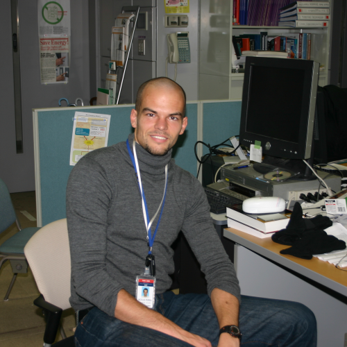

Nicolas Perrin
Postdoctoral Researcher
E-mail : nicolas.perrin at iit.it
Istituto Italiano di Tecnologia (IIT),
Via Morego, 30
16163 Genova,
Italy,
Tel : +39 010 71781 812
General
I am a Postdoc at the department of Advanced Robotics of the IIT in Genoa, Italy.My work is currently focused on motion planning, trajectory generation and control for the COMAN compliant humanoid robot.
Research interests
My main research interests are in hybrid systems, with a strong focus on problems of motion planning and control for humanoid and legged robots, and more generally on robotics problems where the contacts with the environment are of prime importance.I am also interested in computational geometry, computational complexity, machine learning, automata theory and formal languages.
Publications
Here's a list of my publications. Some of them can also be found there.And here is a word cloud generated from all my publications: